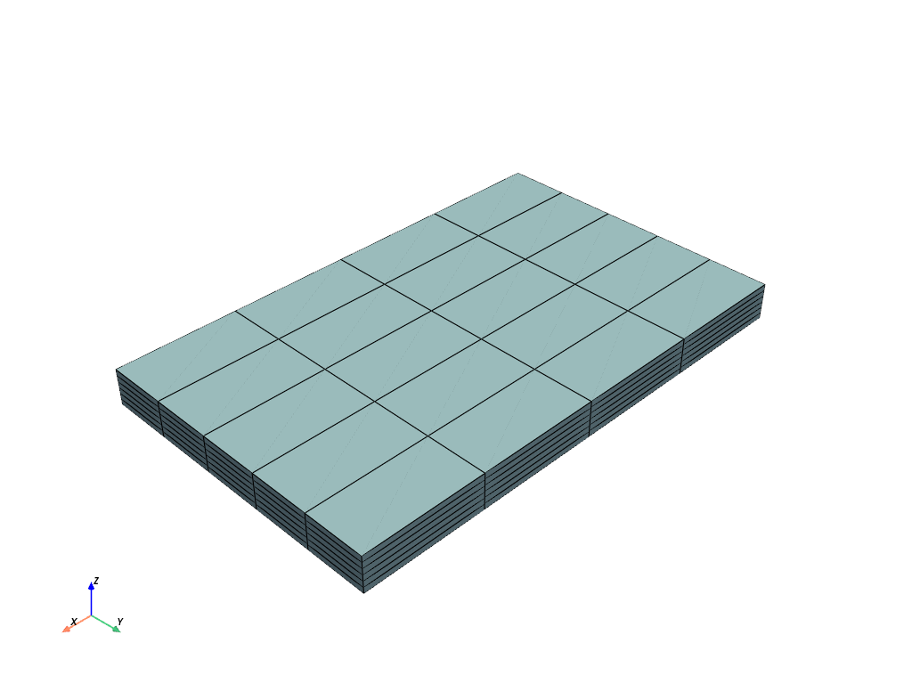

pyvista.ExplicitStructuredGrid#
- class ExplicitStructuredGrid(*args, deep=False, **kwargs)[ソース]#
vtk.vtkExplicitStructuredGridクラスの機能を拡張します．次の方法で初期化できます．
空のグリッドを作成する
vtk.vtkExplicitStructuredGridまたはvtk.vtkUnstructuredGridオブジェクトからVTUまたはVTKファイルから
dimsおよびcorners配列から
- パラメータ:
例
>>> import numpy as np >>> import pyvista as pv >>> >>> # grid size: ni*nj*nk cells; si, sj, sk steps >>> ni, nj, nk = 4, 5, 6 >>> si, sj, sk = 20, 10, 1 >>> >>> # create raw coordinate grid >>> grid_ijk = np.mgrid[ ... : (ni + 1) * si : si, ... : (nj + 1) * sj : sj, ... : (nk + 1) * sk : sk, ... ] >>> >>> # repeat array along each Cartesian axis for connectivity >>> for axis in range(1, 4): ... grid_ijk = grid_ijk.repeat(2, axis=axis) ... >>> >>> # slice off unnecessarily doubled edge coordinates >>> grid_ijk = grid_ijk[:, 1:-1, 1:-1, 1:-1] >>> >>> # reorder and reshape to VTK order >>> corners = grid_ijk.transpose().reshape(-1, 3) >>> >>> dims = np.array([ni, nj, nk]) + 1 >>> grid = pv.ExplicitStructuredGrid(dims, corners) >>> grid = grid.compute_connectivity() >>> grid.plot(show_edges=True)
 メソッド
非構造格子にキャストします．
セル構造の座標を取得します．
ExplicitStructuredGrid.cell_id(coords)セルのIDを取得します．
接続されたセル面の数で配列を計算します．
面接続フラグ配列を計算します．
ExplicitStructuredGrid.hide_cells(ind[, inplace])特定のセルを非表示にします．
ExplicitStructuredGrid.neighbors(ind[, rel])隣接するセルのインデックスを取得します．
ExplicitStructuredGrid.save(filename[, binary])このVTKオブジェクトをファイルに保存します．
ExplicitStructuredGrid.show_cells([inplace])非表示のセルを表示します．
アトリビュート
グリッドのトポロジー次元を取得します．
表示されているセルの境界ボックスを取得します．